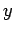

ist eine Funktion der Variablen , die in diesem Zusammenhang Parameter genannt wird. In vielen Fällen ist die Funktion F(y) nicht mehr elementar. Das Integral (8.90) kann ein gewöhnliches oder ein uneigentliches Integral mit unendlichen Integrationsgrenzen oder unbeschränkter Funktion f(x,y) sein. Theoretische Betrachtungen zur Konvergenz uneigentlicher Integrale, die von einem Parameter abhängen, s. z.B. Lit. 8.4.
| Beispiel |
|
Gammafunktion oder EULERsches Integral 2. Gattung: |